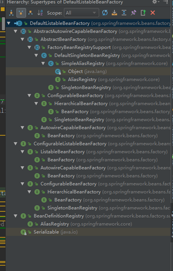
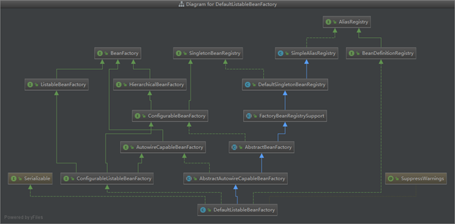
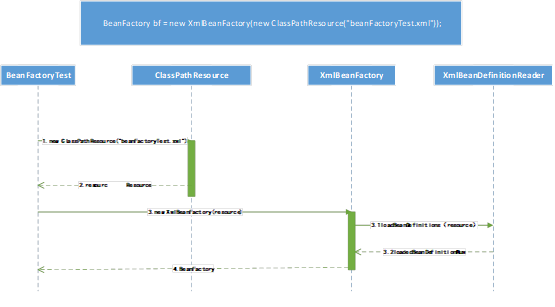
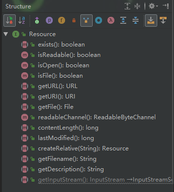
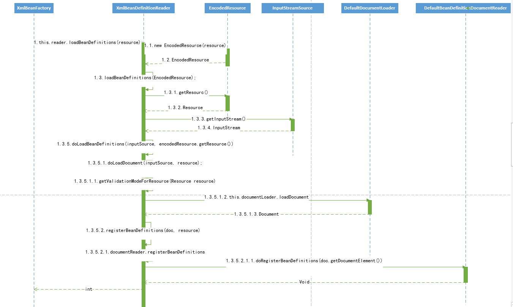
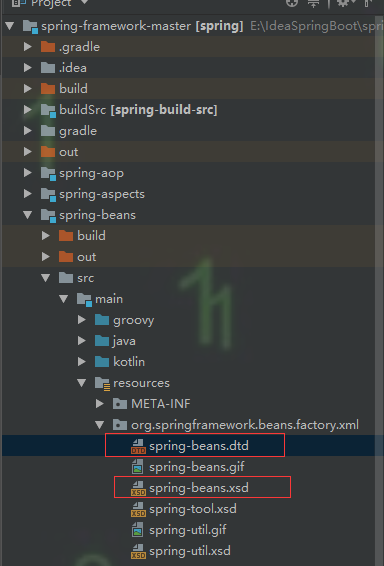

<!DOCTYPE html>
<html>
<head><meta name="generator" content="Hexo 3.8.0">
  <meta charset="utf-8">

  <!-- PACE Progress Bar START -->
  
    <script src="https://raw.githubusercontent.com/HubSpot/pace/v1.0.2/pace.min.js"></script>
    <link rel="stylesheet" href="https://github.com/HubSpot/pace/raw/master/themes/orange/pace-theme-flash.css">
  
  

  <!-- PACE Progress Bar START -->

  
  <title>spring源码学习笔记_容器的基本实现 | xadjccl</title>
  <meta name="viewport" content="width=device-width, initial-scale=1, maximum-scale=1">
  
  <meta name="keywords" content="Spring源码">
  
  
  
  
  <meta name="description" content="获取Spring源码下载工程&amp;#160; &amp;#160; &amp;#160; &amp;#160; 下载工程：首先先确认已正确安装Git，使用Git 下载地址：git://github.com/SpringSource/Spring-framework.git   导入Idea&amp;#160; &amp;#160; &amp;#160; &amp;#160; 导入Idea：下载源码之后cmd到该目录，输入命令gradlew  构建gradl">
<meta name="keywords" content="Spring源码">
<meta property="og:type" content="article">
<meta property="og:title" content="Spring源码学习笔记_容器的基本实现">
<meta property="og:url" content="http://yoursite.com/2019/02/14/Spring源码学习笔记_容器的基本实现/index.html">
<meta property="og:site_name" content="xadjccl">
<meta property="og:description" content="获取Spring源码下载工程&amp;#160; &amp;#160; &amp;#160; &amp;#160; 下载工程：首先先确认已正确安装Git，使用Git 下载地址：git://github.com/SpringSource/Spring-framework.git   导入Idea&amp;#160; &amp;#160; &amp;#160; &amp;#160; 导入Idea：下载源码之后cmd到该目录，输入命令gradlew  构建gradl">
<meta property="og:locale" content="zh-CN">
<meta property="og:image" content="http://yoursite.com/resource/image/SpringSourceLogo.png">
<meta property="og:updated_time" content="2019-02-14T08:38:47.823Z">
<meta name="twitter:card" content="summary">
<meta name="twitter:title" content="Spring源码学习笔记_容器的基本实现">
<meta name="twitter:description" content="获取Spring源码下载工程&amp;#160; &amp;#160; &amp;#160; &amp;#160; 下载工程：首先先确认已正确安装Git，使用Git 下载地址：git://github.com/SpringSource/Spring-framework.git   导入Idea&amp;#160; &amp;#160; &amp;#160; &amp;#160; 导入Idea：下载源码之后cmd到该目录，输入命令gradlew  构建gradl">
<meta name="twitter:image" content="http://yoursite.com/resource/image/SpringSourceLogo.png">
  
    <link rel="alternate" href="/atom.xml" title="xadjccl" type="application/atom+xml">
  
  <link rel="icon" href="/css/images/favicon.ico">
  
    <link href="//fonts.googleapis.com/css?family=Source+Code+Pro" rel="stylesheet" type="text/css">
  
  <link href="https://fonts.googleapis.com/css?family=Open+Sans|Montserrat:700" rel="stylesheet" type="text/css">
  <link href="https://fonts.googleapis.com/css?family=Roboto:400,300,300italic,400italic" rel="stylesheet" type="text/css">
  <link href="https://cdn.bootcss.com/font-awesome/4.6.3/css/font-awesome.min.css" rel="stylesheet">
  <style type="text/css">
    @font-face{font-family:futura-pt;src:url(https://use.typekit.net/af/9749f0/00000000000000000001008f/27/l?subset_id=2&fvd=n5) format("woff2");font-weight:500;font-style:normal;}
    @font-face{font-family:futura-pt;src:url(https://use.typekit.net/af/90cf9f/000000000000000000010091/27/l?subset_id=2&fvd=n7) format("woff2");font-weight:500;font-style:normal;}
    @font-face{font-family:futura-pt;src:url(https://use.typekit.net/af/8a5494/000000000000000000013365/27/l?subset_id=2&fvd=n4) format("woff2");font-weight:lighter;font-style:normal;}
    @font-face{font-family:futura-pt;src:url(https://use.typekit.net/af/d337d8/000000000000000000010095/27/l?subset_id=2&fvd=i4) format("woff2");font-weight:400;font-style:italic;}</style>
    
  <link rel="stylesheet" id="athemes-headings-fonts-css" href="//fonts.googleapis.com/css?family=Yanone+Kaffeesatz%3A200%2C300%2C400%2C700&amp;ver=4.6.1" type="text/css" media="all">
  <link rel="stylesheet" href="/css/style.css">

  <script src="https://code.jquery.com/jquery-3.1.1.min.js"></script>

  <!-- Bootstrap core CSS -->
  <link rel="stylesheet" href="https://netdna.bootstrapcdn.com/bootstrap/3.0.2/css/bootstrap.min.css">
  <link rel="stylesheet" href="/css/hiero.css">
  <link rel="stylesheet" href="/css/glyphs.css">
  

  <!-- Custom CSS -->
  <link rel="stylesheet" href="/css/my.css">
  <!-- Google Adsense -->
  
  <script async src="//pagead2.googlesyndication.com/pagead/js/adsbygoogle.js"></script>
  <script>
      (adsbygoogle = window.adsbygoogle || []).push({
          google_ad_client: "ca-pub-0123456789ABCDEF",
          enable_page_level_ads: true
      });
  </script>
  
</head>
</html>
<script>
var themeMenus = {};

  themeMenus["/"] = "首页"; 

  themeMenus["/archives"] = "归档"; 

  themeMenus["/categories"] = "分类"; 

  themeMenus["/tags"] = "标签"; 

  themeMenus["/about"] = "关于"; 

</script>


  <body data-spy="scroll" data-target="#toc" data-offset="50">


  <header id="allheader" class="site-header" role="banner">
  <div class="clearfix container">
      <div class="site-branding">

          <h1 class="site-title">
            
              <a href="/" title="xadjccl" rel="home"> xadjccl </a>
            
          </h1>

          
            
          <nav id="main-navigation" class="main-navigation" role="navigation">
            <a class="nav-open">Menu</a>
            <a class="nav-close">Close</a>
            <div class="clearfix sf-menu">

              <ul id="main-nav" class="nmenu sf-js-enabled">
                    
                      <li class="menu-item menu-item-type-custom menu-item-object-custom menu-item-home menu-item-1663"> <a class="" href="/">首页</a> </li>
                    
                      <li class="menu-item menu-item-type-custom menu-item-object-custom menu-item-home menu-item-1663"> <a class="" href="/archives">归档</a> </li>
                    
                      <li class="menu-item menu-item-type-custom menu-item-object-custom menu-item-home menu-item-1663"> <a class="" href="/categories">分类</a> </li>
                    
                      <li class="menu-item menu-item-type-custom menu-item-object-custom menu-item-home menu-item-1663"> <a class="" href="/tags">标签</a> </li>
                    
                      <li class="menu-item menu-item-type-custom menu-item-object-custom menu-item-home menu-item-1663"> <a class="" href="/about">关于</a> </li>
                    
              </ul>
            </div>
          </nav>


      </div>
  </div>
</header>


  <div id="originBgDiv" style="background: #fff; width: 100%;">

      <div style="max-height:600px; overflow: hidden;  display: flex; display: -webkit-flex; align-items: center;">
        
      </div>

  </div>

  <script>
  function setAboutIMG(){
      var imgUrls = "css/images/pose.jpg,https://source.unsplash.com/collection/954550/1920x1080".split(",");
      var random = Math.floor((Math.random() * imgUrls.length ));
      if (imgUrls[random].startsWith('http') || imgUrls[random].indexOf('://') >= 0) {
        document.getElementById("originBg").src=imgUrls[random];
      } else {
        document.getElementById("originBg").src='/' + imgUrls[random];
      }
  }
  bgDiv=document.getElementById("originBgDiv");
  if(location.pathname.match('about')){
    setAboutIMG();
    bgDiv.style.display='block';
  }else{
    bgDiv.style.display='none';
  }
  </script>


  <div id="container">
    <div id="wrap">
            
      <div id="content" class="outer">
        
          <section id="main" style="float:none;"><article id="post-Spring源码学习笔记_容器的基本实现" style="width: 66%; float:left;" class="article article-type-post" itemscope="" itemprop="blogPost">
  <div id="articleInner" class="clearfix post-1016 post type-post status-publish format-standard has-post-thumbnail hentry category-template-2 category-uncategorized tag-codex tag-edge-case tag-featured-image tag-image tag-template">
    
<div class="article-gallery">
  <div class="article-gallery-photos">
    
      <a class="article-gallery-img fancybox" href="/../../../../resource/image/SpringSourceLogo.png" rel="gallery_cjs4d6pp40000m89ls47t5etp">
        
      </a>
    
  </div>
</div>

    
      <header class="article-header">
        
  
    <h1 class="thumb" itemprop="name">
      Spring源码学习笔记_容器的基本实现
    </h1>
  

      </header>
    
    <div class="article-meta">
      
	Posted on <a href="/2019/02/14/Spring源码学习笔记_容器的基本实现/" class="article-date">
	  <time datetime="2019-02-14T01:58:47.874Z" itemprop="datePublished">二月 14, 2019</time>
	</a>

      
	<span id="busuanzi_container_page_pv">
	  本文总阅读量<span id="busuanzi_value_page_pv"></span>次
	</span>

    </div>
    <div class="article-entry" itemprop="articleBody">
      
        <h1 id="获取Spring源码"><a href="#获取Spring源码" class="headerlink" title="获取Spring源码"></a>获取Spring源码</h1><h2 id="下载工程"><a href="#下载工程" class="headerlink" title="下载工程"></a>下载工程</h2><p>&#160; &#160; &#160; &#160; 下载工程：首先先确认已正确安装Git，使用Git 下载地址：git://github.com/SpringSource/Spring-framework.git  </p>
<h2 id="导入Idea"><a href="#导入Idea" class="headerlink" title="导入Idea"></a>导入Idea</h2><p>&#160; &#160; &#160; &#160; 导入Idea：下载源码之后cmd到该目录，输入命令gradlew  构建gradle项目，导入Idea<br><a id="more"></a> </p>
<h1 id="容器的基本使用和源码解析"><a href="#容器的基本使用和源码解析" class="headerlink" title="容器的基本使用和源码解析"></a>容器的基本使用和源码解析</h1><h2 id="使用："><a href="#使用：" class="headerlink" title="使用："></a>使用：</h2><h3 id="创建测试Bean"><a href="#创建测试Bean" class="headerlink" title="创建测试Bean"></a>创建测试Bean</h3><pre><code>public class MyTestBean {
   private String testStr = &quot;testStr&quot;;

  public String getTestStr() {
    return testStr;
  }

  public void setTestStr(String testStr) {
    this.testStr = testStr;
  }
}
</code></pre><h3 id="配置文件BeanFactoryTest-xml"><a href="#配置文件BeanFactoryTest-xml" class="headerlink" title="配置文件BeanFactoryTest.xml"></a>配置文件BeanFactoryTest.xml</h3><pre><code>    &lt;?xml version=&quot;1.0&quot; encoding=&quot;UTF-8&quot;?&gt;
&lt;beans xmlns=&quot;http://www.springframework.org/schema/beans&quot;
       xmlns:xsi=&quot;http://www.w3.org/2001/XMLSchema-instance&quot;
       xsi:schemaLocation=&quot;http://www.springframework.org/schema/beans http://www.springframework.org/schema/beans/spring-beans.xsd&quot;&gt;
    &lt;bean id=&quot;myTestBean&quot; class=&quot;com.ccl.ioc.MyTestBean&quot;&gt;&lt;/bean&gt;
&lt;/beans&gt;
</code></pre><h3 id="测试类："><a href="#测试类：" class="headerlink" title="测试类："></a>测试类：</h3><pre><code>public class BeanFactoryTest {

      @Test
      public void testSimpleLoad(){
            BeanFactory bf = new XmlBeanFactory(new ClassPathResource(&quot;beanFactoryTest.xml&quot;));
            MyTestBean bean = (MyTestBean) bf.getBean(&quot;myTestBean&quot;);
            Assert.assertEquals(&quot;testStr&quot;,bean.getTestStr());
      }


}
</code></pre><p>&#160; &#160; &#160; &#160;上述代码中主要完成的功能为：读取配置文件、根据配置文件找到对应的类配置，调用实例。</p>
<h2 id="核心类"><a href="#核心类" class="headerlink" title="核心类"></a>核心类</h2><h3 id="DefaultListableBeanFactory"><a href="#DefaultListableBeanFactory" class="headerlink" title="DefaultListableBeanFactory"></a>DefaultListableBeanFactory</h3><p>&#160; &#160; &#160; &#160;XmlBeanFactory继承DefaultListableBeanFactory，DefaultListableBeanFactory是整个bean加载的核心部分。<br>结构图：<br>  </p>
<p>   </p>
<h3 id="XMLBeanDefinitionReader"><a href="#XMLBeanDefinitionReader" class="headerlink" title="XMLBeanDefinitionReader"></a>XMLBeanDefinitionReader</h3><p>读取配置文件流程：    </p>
<ul>
<li>1.XmlBeanDefinitionReader继承AbstractBeanDefinitionReader 使用ResourLoader将文件路径转化为Resource文件  </li>
<li>2.通过DocumentLoader对Resource文件进行转化为Document文件</li>
<li>通过BeanDefinitionDocumentReader的DefaultBeanDefinitionDocumentReader对Document进行解析，并使用BeanDefinitionParseDelegate对Element进行解析。</li>
</ul>
<h3 id="XmlFactoryBean"><a href="#XmlFactoryBean" class="headerlink" title="XmlFactoryBean"></a>XmlFactoryBean</h3><p>XmlBeanFactory 扩展了DefaultListableBeanFactory 并定义了读取Xml文件中Beandifinition的XMLBeanDefinitionReader。<br>时序图：<br>   </p>
<h1 id="源代码分析"><a href="#源代码分析" class="headerlink" title="源代码分析"></a>源代码分析</h1><pre><code>BeanFactory bf = new XmlBeanFactory(new ClassPathResource(&quot;beanFactoryTest.xml&quot;));
</code></pre><p>进入  XmlBeanFactory.java  </p>
<pre><code>public XmlBeanFactory(Resource resource) throws BeansException {
           // 调用XmlBeanFactory（Resource，BeanFactory）
           this(resource, null);
       }
</code></pre><p>构造方法中的参数是Resource 而上面代码中是ClassPathResource 。<br>首先了解一下构造方法中的参数Resource<br>Resource继承于InputStreamSource<br>快捷键alt+7查看所有的方法<br><br>Resource接口抽象了所有Spring内部使用到的底层资源File、URL、ClassPath等。上图中可以看见它定义了判断资源状态如：是否存在、是否可读、是否打开等。<br>对于不同来源的资源文件有对应的Resource实现。文件资源FileSystemResource、ClassPath资源ClassPathResource、URL资源URLResource、Input资源InputResource等。<br>InputStreamSource 只有一个方法getInputStream()返回一个新的Inputstream对象。</p>
<p>首先通过ClassPathResource封装来读取配置文件<br>接着源码继续调用内部构造方法   </p>
<pre><code>public XmlBeanFactory(Resource resource, BeanFactory parentBeanFactory) throws BeansException {
        super(parentBeanFactory);
        // XmlBeanDefinitionReader加载资源真正的实现
        this.reader.loadBeanDefinitions(resource);
    }
</code></pre><p>主要看XmlBeanDefinitionReader类型的reader提供的loadBeanDefinitions方法。跟进源码首先画出时序图了解大致的调用情况<br><br>进入方法：</p>
<pre><code>public int loadBeanDefinitions(Resource resource) throws BeanDefinitionStoreException {
        return loadBeanDefinitions(new EncodedResource(resource));
    }
</code></pre><p>使用EncodedResource对resource进行封装，EncodedResource主要是对文件的编码进行处理，当设置了编码的时候Spring会使用相对应的编码作为输入流的编码。<br>接着进入内部方法loadBeanDefinitions：  </p>
<pre><code>public int loadBeanDefinitions(EncodedResource encodedResource) throws BeanDefinitionStoreException {
        Assert.notNull(encodedResource, &quot;EncodedResource must not be null&quot;);
        if (logger.isTraceEnabled()) {
            logger.trace(&quot;Loading XML bean definitions from &quot; + encodedResource);
        }
        //通过属性来记录已经加载的资源
        Set&lt;EncodedResource&gt; currentResources = this.resourcesCurrentlyBeingLoaded.get();
        if (currentResources == null) {
            currentResources = new HashSet&lt;&gt;(4);
            this.resourcesCurrentlyBeingLoaded.set(currentResources);
        }
        if (!currentResources.add(encodedResource)) {
            throw new BeanDefinitionStoreException(
                    &quot;Detected cyclic loading of &quot; + encodedResource + &quot; - check your import definitions!&quot;);
        }
        try {
            // 从encodedResource中获取Resource再获取inputStream
            InputStream inputStream = encodedResource.getResource().getInputStream();
            try {
                InputSource inputSource = new InputSource(inputStream);
                if (encodedResource.getEncoding() != null) {
                    inputSource.setEncoding(encodedResource.getEncoding());
                }
                // 真正的核心逻辑部分
                return doLoadBeanDefinitions(inputSource, encodedResource.getResource());
            }
            finally {
                  // 关闭输入流
                inputStream.close();
            }
        }
        catch (IOException ex) {
            throw new BeanDefinitionStoreException(
                    &quot;IOException parsing XML document from &quot; + encodedResource.getResource(), ex);
        }
        finally {
            currentResources.remove(encodedResource);
            if (currentResources.isEmpty()) {
                this.resourcesCurrentlyBeingLoaded.remove();
            }
        }
    }
</code></pre><p>通过SAX获取XML文件的Input对象，接着调用内部方法doLoadBeanDefinitions：  </p>
<pre><code>protected int doLoadBeanDefinitions(InputSource inputSource, Resource resource)
            throws BeanDefinitionStoreException {

        try {
            // 1
            Document doc = doLoadDocument(inputSource, resource);
            // 2
            int count = registerBeanDefinitions(doc, resource);
            if (logger.isDebugEnabled()) {
                logger.debug(&quot;Loaded &quot; + count + &quot; bean definitions from &quot; + resource);
            }
            return count;
        }
        catch (BeanDefinitionStoreException ex) {
            throw ex;
        }
        catch (SAXParseException ex) {
            throw new XmlBeanDefinitionStoreException(resource.getDescription(),
                    &quot;Line &quot; + ex.getLineNumber() + &quot; in XML document from &quot; + resource + &quot; is invalid&quot;, ex);
        }
        catch (SAXException ex) {
            throw new XmlBeanDefinitionStoreException(resource.getDescription(),
                    &quot;XML document from &quot; + resource + &quot; is invalid&quot;, ex);
        }
        catch (ParserConfigurationException ex) {
            throw new BeanDefinitionStoreException(resource.getDescription(),
                    &quot;Parser configuration exception parsing XML from &quot; + resource, ex);
        }
        catch (IOException ex) {
            throw new BeanDefinitionStoreException(resource.getDescription(),
                    &quot;IOException parsing XML document from &quot; + resource, ex);
        }
        catch (Throwable ex) {
            throw new BeanDefinitionStoreException(resource.getDescription(),
                    &quot;Unexpected exception parsing XML document from &quot; + resource, ex);
        }
    }
</code></pre><p>上述代码主要功能：获取XML文件的验证模式 、加载XML文件，得到对应的Document、根据返回的Document注册Bean信息。</p>
<h2 id="获取XML的验证模式"><a href="#获取XML的验证模式" class="headerlink" title="获取XML的验证模式"></a>获取XML的验证模式</h2><p>XML文件的验证模式主要是为了保证XML文件的正确性，主要的验证模式有DTD和XSD</p>
<h3 id="DTD"><a href="#DTD" class="headerlink" title="DTD"></a>DTD</h3><p>DTD（Document Type Definition）即文档类型定义是一种XML约束模式语言。主要是通过比较XML文件和DTD文件来判断文档是否符合规范。DTD验证模式需要在XML文件的头部声明：  </p>
<pre><code>&lt;?xml version=&quot;1.0&quot; encoding=&quot;UTF-8&quot;?&gt;
&lt;!DOCTYPE beans PUBLIC &quot;-//SPRING//DTD BEAN 2.0//EN&quot; &quot;http://www.springframework.org/dtd/spring-beans-2.0.dtd&quot;&gt;
</code></pre><h3 id="XSD"><a href="#XSD" class="headerlink" title="XSD"></a>XSD</h3><p>XSD（XML Schemas Defidition）XML Schemas 描述了XML结构。可以用指定的XML Schemas来验证某个XML是否符合要求。XML Schemas本身也是一个XML。<br>使用XML Schemas对XML文档进行检验时，要声明名称空间xmlns=”<a href="http://www.springframework.org/schema/beans&quot;还要指定该名称空间对应的的XML" target="_blank" rel="noopener">http://www.springframework.org/schema/beans&quot;还要指定该名称空间对应的的XML</a> Schemas文档的存储路径：<br>xsi:schemaLocation=”<a href="http://www.springframework.org/schema/beans" target="_blank" rel="noopener">http://www.springframework.org/schema/beans</a> <a href="http://www.springframework.org/schema/beans/spring-beans.xsd&quot;" target="_blank" rel="noopener">http://www.springframework.org/schema/beans/spring-beans.xsd&quot;</a></p>
<pre><code>&lt;?xml version=&quot;1.0&quot; encoding=&quot;UTF-8&quot;?&gt;
&lt;beans xmlns=&quot;http://www.springframework.org/schema/beans&quot;
       xmlns:xsi=&quot;http://www.w3.org/2001/XMLSchema-instance&quot;
       xsi:schemaLocation=&quot;http://www.springframework.org/schema/beans http://www.springframework.org/schema/beans/spring-beans.xsd&quot;&gt;
  ...
&lt;/beans&gt;
</code></pre><p>可以在项目中查看DTD文件和XSD文件：<br>  </p>
<p>接着看上面代码Document doc = doLoadDocument(inputSource, resource);内容：  </p>
<pre><code>protected Document doLoadDocument(InputSource inputSource, Resource resource) throws Exception {
    return this.documentLoader.loadDocument(inputSource, getEntityResolver(), this.errorHandler,
            getValidationModeForResource(resource), isNamespaceAware());
}
</code></pre><p> 其中getValidationModeForResource(resource)用来获取XML文件的验证模式  </p>
<pre><code>protected int getValidationModeForResource(Resource resource) {
    int validationModeToUse = getValidationMode();
    // 如果手动设置了验证模式就使用手动设置的验证模式
    if (validationModeToUse != VALIDATION_AUTO) {
        return validationModeToUse;
    }
    // 没有手动设置的话直接自动识别文档的验证模式
    int detectedMode = detectValidationMode(resource);
    if (detectedMode != VALIDATION_AUTO) {
        return detectedMode;
    }
    // Hmm, we didn&apos;t get a clear indication... Let&apos;s assume XSD,
    // since apparently no DTD declaration has been found up until
    // detection stopped (before finding the document&apos;s root tag).
    return VALIDATION_XSD;
}
</code></pre><p>跟代码int detectedMode = detectValidationMode(resource);进入XmlValidationModeDetector.java中查看真正的识别验证模式的逻辑：  </p>
<pre><code>public int detectValidationMode(InputStream inputStream) throws IOException {
    // Peek into the file to look for DOCTYPE.
    BufferedReader reader = new BufferedReader(new InputStreamReader(inputStream));
    try {
        boolean isDtdValidated = false;
        String content;
        while ((content = reader.readLine()) != null) {
            content = consumeCommentTokens(content);
            // 如果读取的行是空获取是注释则略过
            if (this.inComment || !StringUtils.hasText(content)) {
                continue;
            }
            // 判断文档中是都存在DOCTYPE
            if (hasDoctype(content)) {
                isDtdValidated = true;
                break;
            }

            if (hasOpeningTag(content)) {
                // End of meaningful data...
                break;
            }
        }
        return (isDtdValidated ? VALIDATION_DTD : VALIDATION_XSD);
    }
    catch (CharConversionException ex) {
        // Choked on some character encoding...
        // Leave the decision up to the caller.
        return VALIDATION_AUTO;
    }
    finally {
        reader.close();
    }
}
</code></pre><p>上述代码主要就是读取文档判断文档中是否存在DOCTYPE这个字符串。如果存在则认为是DTD模式，如果不存在则是XSD模式。<br>验证文档模式之后，就真正的加载文档，跟到DefaultDocumentLoader.java中  </p>
<pre><code>public Document loadDocument(InputSource inputSource, EntityResolver entityResolver,
        ErrorHandler errorHandler, int validationMode, boolean namespaceAware) throws Exception {

    DocumentBuilderFactory factory = createDocumentBuilderFactory(validationMode, namespaceAware);
    if (logger.isTraceEnabled()) {
        logger.trace(&quot;Using JAXP provider [&quot; + factory.getClass().getName() + &quot;]&quot;);
    }
    DocumentBuilder builder = createDocumentBuilder(factory, entityResolver, errorHandler);
    return builder.parse(inputSource);
}
</code></pre><p>这部分代码使用SAX解析XML文档。<br>解析文档之后进入到int count = registerBeanDefinitions(doc, resource);来解析和注册BeanDefinitions  </p>
<pre><code>public int registerBeanDefinitions(Document doc, Resource resource) throws BeanDefinitionStoreException {
    // 使用DefaultBeanDefinitionDocumentReader 实例化BeanDefinitionDocumentReader
    BeanDefinitionDocumentReader documentReader = createBeanDefinitionDocumentReader();
    // 记录统计前BeanDefinition的加载个数
    int countBefore = getRegistry().getBeanDefinitionCount();
    // 加载及注册bean
    documentReader.registerBeanDefinitions(doc, createReaderContext(resource));
    // 记录本次加载的BeanDefinition个数
    return getRegistry().getBeanDefinitionCount() - countBefore;
}
</code></pre><p>跟代码进入documentReader.registerBeanDefinitions(doc, createReaderContext(resource));</p>
<pre><code>public void registerBeanDefinitions(Document doc, XmlReaderContext readerContext) {
    this.readerContext = readerContext;
    // 核心逻辑
    doRegisterBeanDefinitions(doc.getDocumentElement());
}
</code></pre><p>进入DefaultBeanDefinitionDocumentReader.java   </p>
<pre><code>protected void doRegisterBeanDefinitions(Element root) {

    BeanDefinitionParserDelegate parent = this.delegate;
    this.delegate = createDelegate(getReaderContext(), root, parent);

    if (this.delegate.isDefaultNamespace(root)) {
        //  处理profile属性
        String profileSpec = root.getAttribute(PROFILE_ATTRIBUTE);
        if (StringUtils.hasText(profileSpec)) {
            String[] specifiedProfiles = StringUtils.tokenizeToStringArray(
                    profileSpec, BeanDefinitionParserDelegate.MULTI_VALUE_ATTRIBUTE_DELIMITERS);
            // We cannot use Profiles.of(...) since profile expressions are not supported
            // in XML config. See SPR-12458 for details.
            if (!getReaderContext().getEnvironment().acceptsProfiles(specifiedProfiles)) {
                if (logger.isDebugEnabled()) {
                    logger.debug(&quot;Skipped XML bean definition file due to specified profiles [&quot; + profileSpec +
                            &quot;] not matching: &quot; + getReaderContext().getResource());
                }
                return;
            }
        }
    }

    preProcessXml(root);
    // 解析并注BeanDefidition
    parseBeanDefinitions(root, this.delegate);
    postProcessXml(root);

    this.delegate = parent;
}
</code></pre><p>跟代码进入parseBeanDefinitions(root, this.delegate);  </p>
<pre><code>protected void parseBeanDefinitions(Element root, BeanDefinitionParserDelegate delegate) {
        if (delegate.isDefaultNamespace(root)) {
            NodeList nl = root.getChildNodes();
            for (int i = 0; i &lt; nl.getLength(); i++) {
                Node node = nl.item(i);
                if (node instanceof Element) {
                    Element ele = (Element) node;
                    if (delegate.isDefaultNamespace(ele)) {
                        parseDefaultElement(ele, delegate);
                    }
                    else {
                        delegate.parseCustomElement(ele);
                    }
                }
            }
        }
        else {
            delegate.parseCustomElement(root);
        }
    }
</code></pre><p>在Spring配置文件中Bean的声明有两类：  </p>
<ul>
<li>1.默认配置：  <bean id="myTestBean" class="com.ccl.ioc.MyTestBean"></bean></li>
<li>2.自定义：<a href="tx:annotation-driven/" target="_blank" rel="noopener">tx:annotation-driven/</a></li>
</ul>
<p>代码delegate.isDefaultNamespace(root)来判断是否是默认配置  </p>
<pre><code>public boolean isDefaultNamespace(@Nullable String namespaceUri) {
        //BEANS_NAMESPACE_URI = &quot;http://www.springframework.org/schema/beans&quot;;
        return (!StringUtils.hasLength(namespaceUri) || BEANS_NAMESPACE_URI.equals(namespaceUri));
    }

    public boolean isDefaultNamespace(Node node) {
        return isDefaultNamespace(getNamespaceURI(node));
    }
</code></pre><p>如果是Spring默认配置：  </p>
<p>parseDefaultElement(ele, delegate);<br>如果是自定义配置：<br>delegate.parseCustomElement(ele);</p>
<blockquote>
<p>Spring源码文章主要是本人在学习郝佳的《Spring源码深度解学习》时的学习笔记，巩固学习也希望可以帮助正在学习的朋友。有兴趣的朋友可以直接阅读书本，但是书本的内容总是感觉很多，学习笔记主要也是挑点重点记录。</p>
</blockquote>

      
    </div>
    <footer class="entry-meta entry-footer">
      
	<span class="ico-folder"></span>
    <a class="article-category-link" href="/categories/Spring源码/">Spring源码</a>

      
  <span class="ico-tags"></span>
  <ul class="article-tag-list"><li class="article-tag-list-item"><a class="article-tag-list-link" href="/tags/Spring源码/">Spring源码</a></li></ul>

      
            
      
    </footer>
  </div>
  
    
<nav id="article-nav">
  
  
    <a href="/2019/01/29/(七)SpringBoot统一异常处理/" id="article-nav-older" class="article-nav-link-wrap">
      <strong class="article-nav-caption">下一篇</strong>
      <div class="article-nav-title">(七)SpringBoot统一异常处理</div>
    </a>
  
</nav>

  
</article>

<!-- Table of Contents -->

  <aside id="sidebar">
    <div id="toc" class="toc-article" style="overflow-y: scroll; max-width: 28%;">
    <strong class="toc-title">文章目录</strong>
    
      <ol class="nav"><li class="nav-item nav-level-1"><a class="nav-link" href="#获取Spring源码"><span class="nav-number">1.</span> <span class="nav-text">获取Spring源码</span></a><ol class="nav-child"><li class="nav-item nav-level-2"><a class="nav-link" href="#下载工程"><span class="nav-number">1.1.</span> <span class="nav-text">下载工程</span></a></li><li class="nav-item nav-level-2"><a class="nav-link" href="#导入Idea"><span class="nav-number">1.2.</span> <span class="nav-text">导入Idea</span></a></li></ol></li><li class="nav-item nav-level-1"><a class="nav-link" href="#容器的基本使用和源码解析"><span class="nav-number">2.</span> <span class="nav-text">容器的基本使用和源码解析</span></a><ol class="nav-child"><li class="nav-item nav-level-2"><a class="nav-link" href="#使用："><span class="nav-number">2.1.</span> <span class="nav-text">使用：</span></a><ol class="nav-child"><li class="nav-item nav-level-3"><a class="nav-link" href="#创建测试Bean"><span class="nav-number">2.1.1.</span> <span class="nav-text">创建测试Bean</span></a></li><li class="nav-item nav-level-3"><a class="nav-link" href="#配置文件BeanFactoryTest-xml"><span class="nav-number">2.1.2.</span> <span class="nav-text">配置文件BeanFactoryTest.xml</span></a></li><li class="nav-item nav-level-3"><a class="nav-link" href="#测试类："><span class="nav-number">2.1.3.</span> <span class="nav-text">测试类：</span></a></li></ol></li><li class="nav-item nav-level-2"><a class="nav-link" href="#核心类"><span class="nav-number">2.2.</span> <span class="nav-text">核心类</span></a><ol class="nav-child"><li class="nav-item nav-level-3"><a class="nav-link" href="#DefaultListableBeanFactory"><span class="nav-number">2.2.1.</span> <span class="nav-text">DefaultListableBeanFactory</span></a></li><li class="nav-item nav-level-3"><a class="nav-link" href="#XMLBeanDefinitionReader"><span class="nav-number">2.2.2.</span> <span class="nav-text">XMLBeanDefinitionReader</span></a></li><li class="nav-item nav-level-3"><a class="nav-link" href="#XmlFactoryBean"><span class="nav-number">2.2.3.</span> <span class="nav-text">XmlFactoryBean</span></a></li></ol></li></ol></li><li class="nav-item nav-level-1"><a class="nav-link" href="#源代码分析"><span class="nav-number">3.</span> <span class="nav-text">源代码分析</span></a><ol class="nav-child"><li class="nav-item nav-level-2"><a class="nav-link" href="#获取XML的验证模式"><span class="nav-number">3.1.</span> <span class="nav-text">获取XML的验证模式</span></a><ol class="nav-child"><li class="nav-item nav-level-3"><a class="nav-link" href="#DTD"><span class="nav-number">3.1.1.</span> <span class="nav-text">DTD</span></a></li><li class="nav-item nav-level-3"><a class="nav-link" href="#XSD"><span class="nav-number">3.1.2.</span> <span class="nav-text">XSD</span></a></li></ol></li></ol></li></ol>
    
    </div>
  </aside>
</section>
        
      </div>
      <footer id="footer" class="site-footer">
  

  <div class="clearfix container">
      <div class="site-info">
	      &copy; 2019 xadjccl All Rights Reserved.
          
            <span id="busuanzi_container_site_uv">
              本站访客数<span id="busuanzi_value_site_uv"></span>人次  
              本站总访问量<span id="busuanzi_value_site_pv"></span>次
            </span>
          
      </div>
      <div class="site-credit">
        Theme by <a href="https://github.com/iTimeTraveler/hexo-theme-hiero" target="_blank">hiero</a>
      </div>
  </div>
</footer>


<!-- min height -->

<script>
    var contentdiv = document.getElementById("content");

    contentdiv.style.minHeight = document.body.offsetHeight - document.getElementById("allheader").offsetHeight - document.getElementById("footer").offsetHeight + "px";
</script>

<!-- Custome JS -->
<script src="/js/my.js"></script>
    </div>
    <!-- <nav id="mobile-nav">
  
    <a href="/" class="mobile-nav-link">Home</a>
  
    <a href="/archives" class="mobile-nav-link">Archives</a>
  
    <a href="/categories" class="mobile-nav-link">Categories</a>
  
    <a href="/tags" class="mobile-nav-link">Tags</a>
  
    <a href="/about" class="mobile-nav-link">About</a>
  
</nav> -->
    

<!-- mathjax config similar to math.stackexchange -->

<script type="text/x-mathjax-config">
  MathJax.Hub.Config({
    tex2jax: {
      inlineMath: [ ['$','$'], ["\\(","\\)"] ],
      processEscapes: true
    }
  });
</script>

<script type="text/x-mathjax-config">
    MathJax.Hub.Config({
      tex2jax: {
        skipTags: ['script', 'noscript', 'style', 'textarea', 'pre', 'code']
      }
    });
</script>

<script type="text/x-mathjax-config">
    MathJax.Hub.Queue(function() {
        var all = MathJax.Hub.getAllJax(), i;
        for(i=0; i < all.length; i += 1) {
            all[i].SourceElement().parentNode.className += ' has-jax';
        }
    });
</script>

<script type="text/javascript" src="https://cdnjs.cloudflare.com/ajax/libs/mathjax/2.7.4/MathJax.js?config=TeX-AMS-MML_HTMLorMML">
</script>


  <link rel="stylesheet" href="https://cdnjs.cloudflare.com/ajax/libs/fancybox/2.1.5/jquery.fancybox.min.css">
  <script src="https://cdnjs.cloudflare.com/ajax/libs/fancybox/2.1.5/jquery.fancybox.min.js"></script>


<script src="/js/scripts.js"></script>
<script src="https://stackpath.bootstrapcdn.com/bootstrap/3.3.7/js/bootstrap.min.js"></script>
<script src="/js/main.js"></script>


  <div style="display: none;">
    <script src="https://s95.cnzz.com/z_stat.php?id=1260716016&web_id=1260716016" language="JavaScript"></script>
  </div>


	<script async src="https://dnqof95d40fo6.cloudfront.net/atw7f8.js">
	</script>


  </div>

  <a id="rocket" href="#top" class=""></a>
  <script type="text/javascript" src="/js/totop.js" async=""></script>
</body>
</html>
